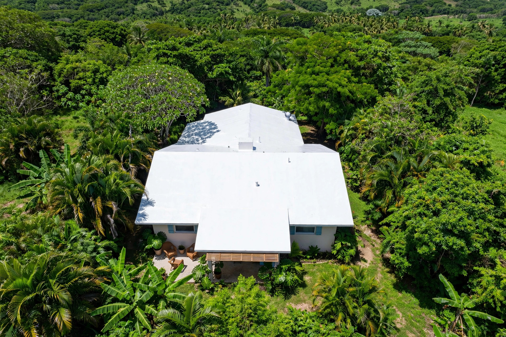
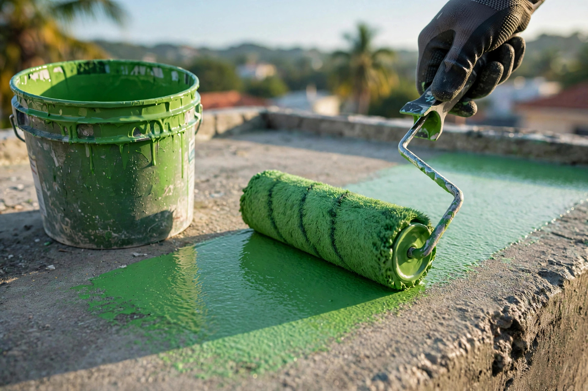
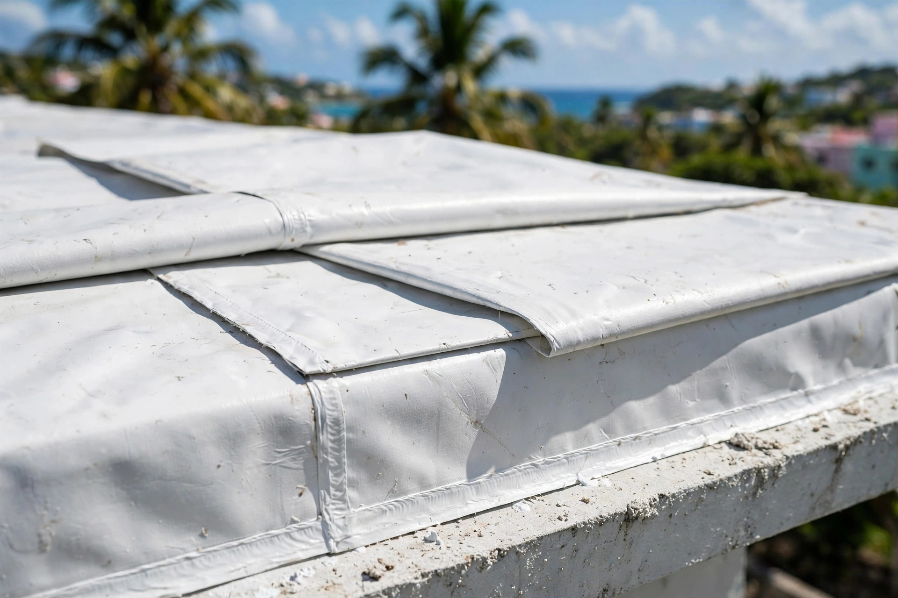

Inspección gratis - Estimado por escrito
Sellado elastomérico profesional con materiales premium y garantía escrita. Visitamos, medimos e inspeccionamos sin costo: llama al 787-757-1985.
Resultados reales
Trabajos reales con el sistema Uniko. Toca cualquier foto para verla grande.



Desliza para ver todos los trabajos
Servicios
Preparación seria, sellado profesional y garantía escrita: el sistema completo.
Sellado elastomérico profesional contra filtraciones y humedad.
SelladoSistemas de membrana y coating para máxima protección.
ProtecciónLocalizamos y reparamos filtraciones en el acto.
ReparaciónLavado a presión y preparación de superficie antes del sellado.
PreparaciónVisitamos tu propiedad, medimos el techo y detectamos filtraciones sin costo.
InspecciónTe damos precio fijo y alcance claro del trabajo antes de empezar.
CotizaciónEl método Uniko
Visitamos, medimos el techo y detectamos filtraciones sin costo.
Precio fijo y alcance claro antes de empezar.
Limpieza a presión, reparación de grietas y preparación de superficie.
Aplicación del sistema de sellado con garantía escrita.
Quienes somos
Uniko Roofing Service sella techos en Puerto Rico con materiales premium y garantía escrita. Un solo sello, cero filtraciones: esa es la promesa.
Inspección gratis y estimado por escrito antes de empezar. Llama al 787-757-1985 y agenda tu visita.
Preguntas frecuentes
El costo depende del tamaño del techo, su condición actual y el sistema de sellado que se use. Por eso ofrecemos estimado gratis: visitamos, medimos e inspeccionamos sin costo.
Con buena preparación de superficie y materiales de calidad, un sellado elastomérico profesional puede durar de 5 a 10 años o más, dependiendo del mantenimiento.
Sí. Primero localizamos el origen de cada filtración, reparamos grietas y puntos débiles, y luego aplicamos el sistema de sellado completo.
La mayoría de los techos residenciales se completan en 1 a 3 días laborables. Te damos un itinerario claro antes de empezar.
Sí. Todo trabajo de sellado incluye garantía escrita. Si aparece una filtración en el área sellada durante el periodo de garantía, volvemos y lo corregimos.
Agenda tu visita
Llena esto y te abrimos WhatsApp con tu mensaje listo.
Cotizacion sin compromiso: Agenda tu inspección gratis por WhatsApp y recibe tu estimado por escrito.
Esta pagina la creo ManuPro. Escribenos hoy mismo y cotiza la website profesional de tu negocio.
Cotizar por WhatsApp